Demonstrate analyizing data using spatialcells and SCIMAP together.
@author: Guihong Wan and Boshen Yan
@date: Feb 12 2024
[1]:
import matplotlib.pyplot as plt
import matplotlib as mpl
import anndata as ad
import scanpy as sc
import plotly.io as pio
pio.renderers.default = 'browser'
# Before you start, make sure you have installed SCIMAP
# pip install scimap
import scimap as sm
import spatialcells as spc
/Users/ghwan/opt/anaconda3/envs/spatialcells_env/lib/python3.10/site-packages/tqdm/auto.py:21: TqdmWarning:
IProgress not found. Please update jupyter and ipywidgets. See https://ipywidgets.readthedocs.io/en/stable/user_install.html
[2]:
adata = ad.read_h5ad("../../data/MEL1_adata.h5ad")
[51]:
spc.prep.setGate(adata, "SOX10_cellRingMask", 7.9, debug=True)
spc.prep.setGate(adata, "MITF_cellRingMask", 6.3, debug=True)
spc.prep.setGate(adata, "KERATIN_cellRingMask", 6.4, debug=True)
spc.prep.setGate(adata, "CD3D_cellRingMask", 7, debug=True)
SOX10_cellRingMask_positive
False 566576
True 544009
Name: count, dtype: int64
MITF_cellRingMask_positive
False 851822
True 258763
Name: count, dtype: int64
KERATIN_cellRingMask_positive
False 1067400
True 43185
Name: count, dtype: int64
CD3D_cellRingMask_positive
False 1038559
True 72026
Name: count, dtype: int64
[52]:
def combine_columns(row):
if row["MITF_cellRingMask_positive"] and row["SOX10_cellRingMask_positive"]:
return "SOX10+MITF+"
elif row["SOX10_cellRingMask_positive"]:
return "SOX10+MITF-"
else:
return "SOX10-"
# Applying the function to create the new phenotype column
adata.obs["pheno"] = adata.obs.apply(combine_columns, axis=1)
Seperate the tissue into two parts
The tissue was fragmented. Following the original paper, we can conduct analyses seperately for the two parts.
[53]:
markers_of_interest = ["SOX10_cellRingMask_positive"]
communitycolumn = "COI_community"
ret = spc.spatial.getCommunities(
adata, markers_of_interest, eps=50, newcolumn=communitycolumn
)
# Plotting the communities
plot_first_n_clusters = 10
fig, ax = plt.subplots(figsize=(10, 8))
spc.plt.plotCommunities(
adata,
ret,
communitycolumn,
plot_first_n_clusters=plot_first_n_clusters,
s=1,
fontsize=10,
ax=ax,
)
ax.invert_yaxis()
plt.show()
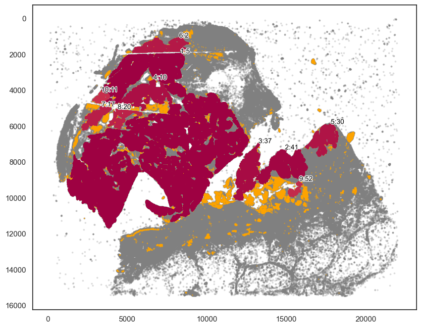
[54]:
# Here we chose the main tumor area.
communityIndexList = [5, 2, 10, 11, 17, 20]
boundary = spc.spa.getBoundary(adata, communitycolumn, communityIndexList, alpha=150)
pruned_boundary = spc.spa.pruneSmallComponents(
boundary, min_edges=20, holes_min_edges=200
)
[56]:
pruned_boundary = spc.spa.getExtendedBoundary(pruned_boundary, 40)
[57]:
markersize = 1
fig, ax = plt.subplots(figsize=(10, 8))
## all points
ax.scatter(
*zip(*adata.obs[["X_centroid", "Y_centroid"]].to_numpy()),
s=markersize,
color="grey",
alpha=0.2
)
## epi
epi_tmp = adata.obs[adata.obs["KERATIN_cellRingMask_positive"] == True]
ax.scatter(
*zip(*epi_tmp[["X_centroid", "Y_centroid"]].to_numpy()),
s=0.1, color="blue", alpha=0.5, label="Epi"
)
# Points in selected commnities
xy = adata.obs[adata.obs[communitycolumn].isin(communityIndexList)][
["X_centroid", "Y_centroid"]
].to_numpy()
ax.scatter(xy[:, 0], xy[:, 1], s=markersize, color="r", label="Selected communities")
# Bounds of points in selected commnities
spc.plt.plotBoundary(pruned_boundary, ax=ax, linewidth=2, color="b", label="Boundary")
ax.invert_yaxis()
ax.legend(loc="lower left")
plt.show()

[58]:
regions = ["Tumor"]
boundaries_list = [pruned_boundary]
spc.spatial.assignPointsToRegions(
adata, boundaries_list, regions, assigncolumn="region", default="BG"
)
724356it [01:41, 7148.66it/s]
Assigned points to region: Tumor
[59]:
adata2 = adata[adata.obs["region"] == "BG"].copy()
[87]:
markers_of_interest = ["KERATIN_cellRingMask_positive", "CD3D_cellRingMask_positive"]
communitycolumn = "KOI_community"
ret = spc.spatial.getCommunities(
adata2, markers_of_interest, eps=300, newcolumn=communitycolumn
)
# Plotting the communities
plot_first_n_clusters = 10
fig, ax = plt.subplots(figsize=(10, 8))
spc.plt.plotCommunities(
adata2,
ret,
communitycolumn,
plot_first_n_clusters=plot_first_n_clusters,
s=1,
fontsize=10,
ax=ax,
)
ax.invert_yaxis()
plt.show()
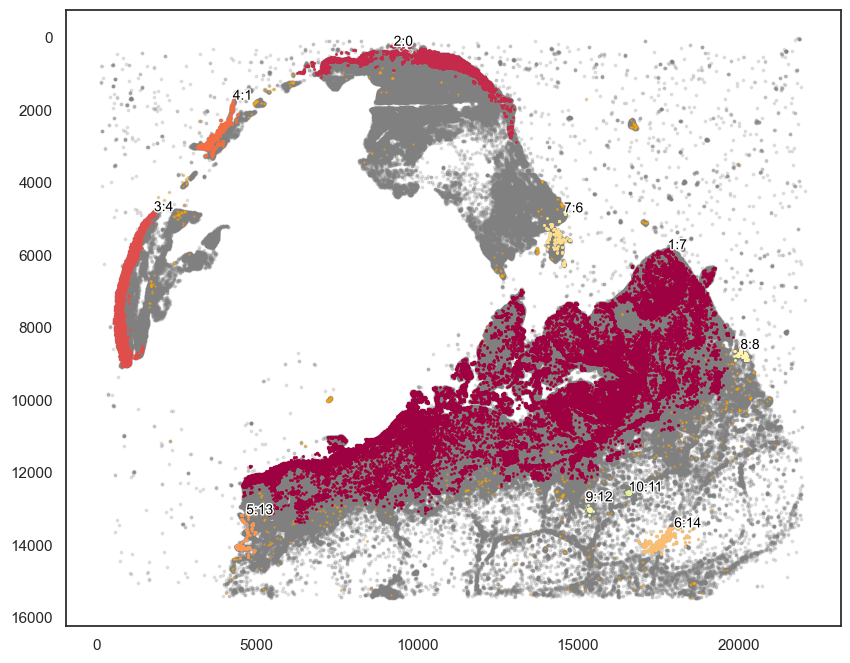
[96]:
communityIndexList = [7,13,8]
boundary2 = spc.spa.getBoundary(adata2, communitycolumn, communityIndexList, alpha=200)
pruned_boundary2 = spc.spa.pruneSmallComponents(
boundary2, min_edges=20, holes_min_edges=200
)
[100]:
# You may want to slightly extend the boundary.
pruned_boundary2_extended = spc.spa.getExtendedBoundary(pruned_boundary2, 40)
[101]:
markersize = 1
fig, ax = plt.subplots(figsize=(10, 8))
## all points
ax.scatter(
*zip(*adata.obs[["X_centroid", "Y_centroid"]].to_numpy()),
s=markersize,
color="grey",
alpha=0.2
)
# Bounds of points in selected commnities
spc.plt.plotBoundary(pruned_boundary2, ax=ax, linewidth=2, color="orange", label="Boundary")
spc.plt.plotBoundary(pruned_boundary2_extended, ax=ax, linewidth=2, color="red", label="Boundary Extended")
ax.invert_yaxis()
ax.legend(loc="lower left")
plt.show()
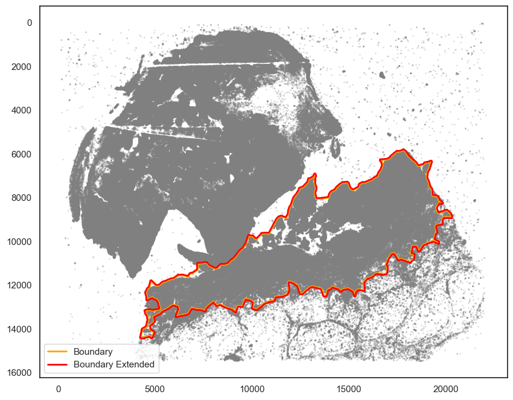
[102]:
regions = ["Part2"]
boundaries_list = [pruned_boundary2_extended]
spc.spatial.assignPointsToRegions(
adata, boundaries_list, regions, assigncolumn="region", default="BG"
)
681477it [01:01, 11004.91it/s]
Assigned points to region: Part2
[103]:
adata1 = adata[adata.obs["region"] == "BG"].copy()
[112]:
markers_of_interest = ["SOX10_cellRingMask_positive","KERATIN_cellRingMask_positive", "CD3D_cellRingMask_positive"]
markers_of_interest = ["SOX10_cellRingMask_positive"]
communitycolumn = "COI_community"
ret = spc.spatial.getCommunities(
adata1, markers_of_interest, eps=200, newcolumn=communitycolumn
)
# Plotting the communities
plot_first_n_clusters = 10
fig, ax = plt.subplots(figsize=(10, 8))
spc.plt.plotCommunities(
adata1,
ret,
communitycolumn,
plot_first_n_clusters=plot_first_n_clusters,
s=1,
fontsize=10,
ax=ax,
)
ax.invert_yaxis()
plt.show()
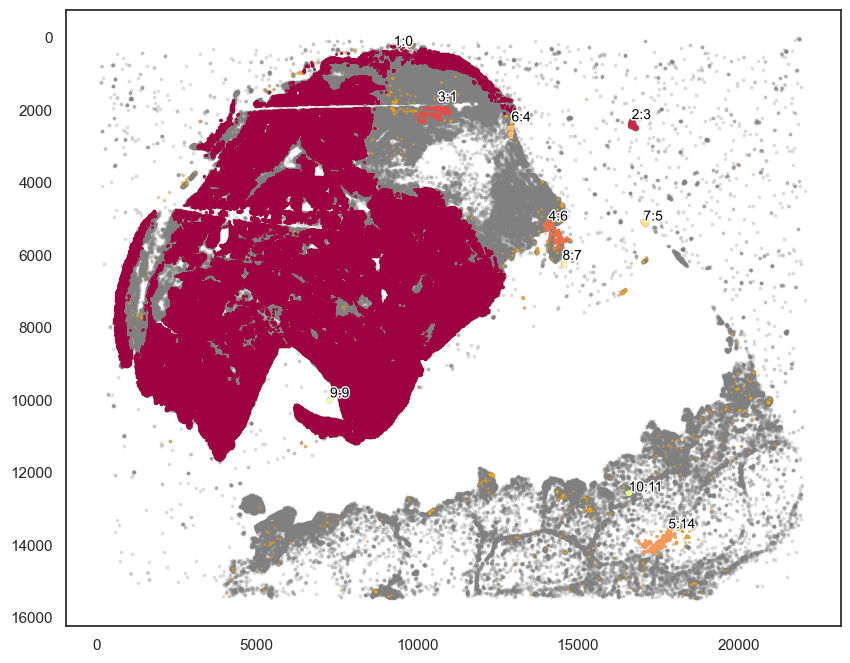
[119]:
communityIndexList = [0]
boundary1 = spc.spa.getBoundary(adata1, communitycolumn, communityIndexList, alpha=200)
pruned_boundary1 = spc.spa.pruneSmallComponents(boundary1, min_edges=20, holes_min_edges=200)
[127]:
markersize = 1
fig, ax = plt.subplots(figsize=(10, 8))
## all points
ax.scatter(
*zip(*adata.obs[["X_centroid", "Y_centroid"]].to_numpy()),
s=markersize,
color="grey",
alpha=0.2
)
## epi
epi_tmp = adata.obs[adata.obs["KERATIN_cellRingMask_positive"] == True]
ax.scatter(
*zip(*epi_tmp[["X_centroid", "Y_centroid"]].to_numpy()),
s=0.1, color="tab:cyan", alpha=0.5, label="Epi"
)
tmp = adata.obs[adata.obs["SOX10_cellRingMask_positive"] == True]
ax.scatter(
*zip(*tmp[["X_centroid", "Y_centroid"]].to_numpy()),
s=0.1, color="tab:red", alpha=0.5, label="Tumor"
)
# Bounds of points in selected commnities
spc.plt.plotBoundary(pruned_boundary1, ax=ax, linewidth=2, color="blue", label="Boundary 1")
spc.plt.plotBoundary(pruned_boundary2, ax=ax, linewidth=2, color="purple", label="Boundary 2")
ax.invert_yaxis()
ax.legend(loc="lower left")
plt.show()
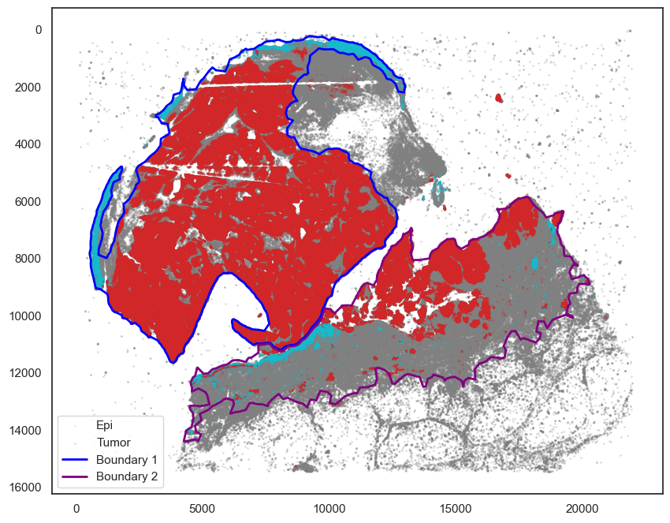
Work with SCANPY to cluster cells in each region
[ ]:
regions = ["Part1","Part2"]
boundaries_list = [pruned_boundary1, pruned_boundary2]
spc.spatial.assignPointsToRegions(
adata, boundaries_list, regions, assigncolumn="region", default="BG"
)
[126]:
markersize = 1
fig, ax = plt.subplots(figsize=(10, 8))
## all points
ax.scatter(
*zip(*adata.obs[["X_centroid", "Y_centroid"]].to_numpy()),
s=markersize,
color="grey",
alpha=0.2
)
tmp = adata.obs[adata.obs["region"] == "Part1"]
ax.scatter(
*zip(*tmp[["X_centroid", "Y_centroid"]].to_numpy()),
s=0.1, color="red", alpha=0.5, label="Part 1"
)
tmp = adata.obs[adata.obs["region"] == "Part2"]
ax.scatter(
*zip(*tmp[["X_centroid", "Y_centroid"]].to_numpy()),
s=0.1, color="orange", alpha=0.5, label="Part 2"
)
# Bounds of points in selected commnities
spc.plt.plotBoundary(pruned_boundary1, ax=ax, linewidth=2, color="blue", label="Boundary 1")
spc.plt.plotBoundary(pruned_boundary2, ax=ax, linewidth=2, color="purple", label="Boundary 2")
ax.invert_yaxis()
ax.legend(loc="lower left")
plt.show()
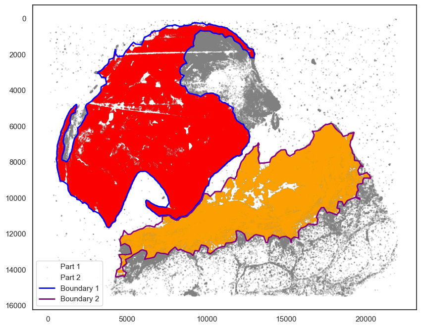
[130]:
adata_part1 = adata[adata.obs["region"] == "Part1"].copy()
adata_part1
[130]:
AnnData object with n_obs × n_vars = 632296 × 6
obs: 'X_centroid', 'Y_centroid', 'phenotype_large_cohort', 'SOX10_cellRingMask_positive', 'MITF_cellRingMask_positive', 'KERATIN_cellRingMask_positive', 'pheno', 'COI_community', 'region', 'CD3D_cellRingMask_positive'
uns: 'all_markers'
[131]:
adata_part2 = adata[adata.obs["region"] == "Part2"].copy()
adata_part2
[131]:
AnnData object with n_obs × n_vars = 356569 × 6
obs: 'X_centroid', 'Y_centroid', 'phenotype_large_cohort', 'SOX10_cellRingMask_positive', 'MITF_cellRingMask_positive', 'KERATIN_cellRingMask_positive', 'pheno', 'COI_community', 'region', 'CD3D_cellRingMask_positive'
uns: 'all_markers'
[138]:
# Since the sc.tl.umap() is too slow, here we do sampling of the cells
sc.pp.subsample(adata_part1, n_obs=10000, random_state=42)
sc.pp.subsample(adata_part2, n_obs=10000, random_state=42)
adata_part1
[138]:
AnnData object with n_obs × n_vars = 10000 × 6
obs: 'X_centroid', 'Y_centroid', 'phenotype_large_cohort', 'SOX10_cellRingMask_positive', 'MITF_cellRingMask_positive', 'KERATIN_cellRingMask_positive', 'pheno', 'COI_community', 'region', 'CD3D_cellRingMask_positive'
uns: 'all_markers', 'neighbors'
obsp: 'distances', 'connectivities'
[139]:
# Construct the neighborhood graph
sc.pp.neighbors(adata_part1, n_neighbors=30, n_pcs=5)
# Cluster the neighborhood graph
sc.tl.leiden(adata_part1, resolution = 1)
# UMAP
sc.tl.umap(adata_part1)
[143]:
# Construct the neighborhood graph
sc.pp.neighbors(adata_part2, n_neighbors=30, n_pcs=5)
# Cluster the neighborhood graph
sc.tl.leiden(adata_part2, resolution = 1)
# UMAP
sc.tl.umap(adata_part2)
[163]:
import warnings
warnings.filterwarnings('ignore')
sc.pl.umap(adata_part1, color=['leiden'],
cmap= 'vlag', use_raw=False, s=30)
sc.pl.umap(adata_part1, color=['KERATIN_cellRingMask', 'CD3D_cellRingMask',
'SOX10_cellRingMask','MITF_cellRingMask'],
cmap= 'vlag', use_raw=False, s=30)
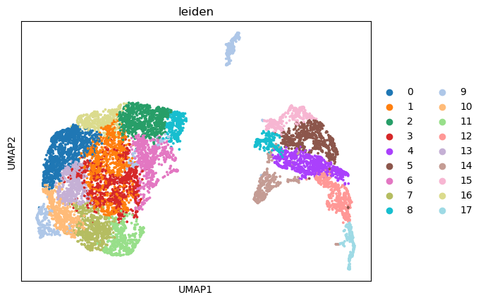
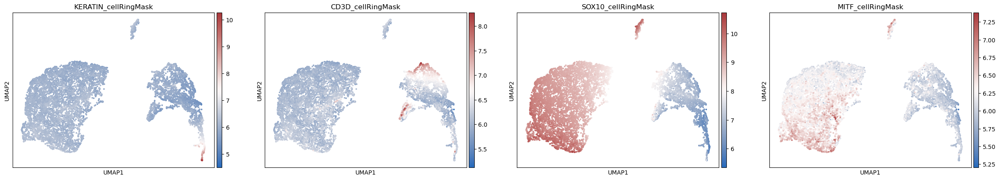
[164]:
warnings.filterwarnings('ignore')
# Plot
sc.pl.umap(adata_part2, color=['leiden'],
cmap= 'vlag', use_raw=False, s=30)
sc.pl.umap(adata_part2, color=['KERATIN_cellRingMask', 'CD3D_cellRingMask',
'SOX10_cellRingMask','MITF_cellRingMask'],
cmap= 'vlag', use_raw=False, s=30)
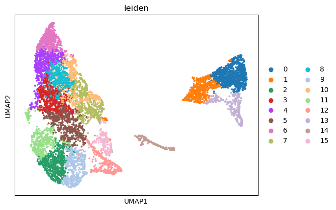
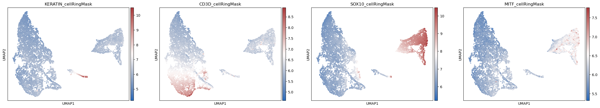
Work with SCIMAP to plot cell-type composition
[150]:
sm.pl.stacked_barplot (adata,
x_axis='region',
y_axis='phenotype_large_cohort',
method='absolute')
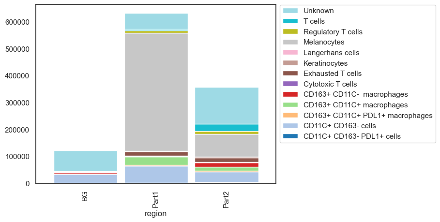
Annimate with SCIMAP
The objective is to create an animation showing transition between UMAP plot and XY coordinate plot in spatial data. See SCIMAP for details.
[166]:
warnings.filterwarnings('ignore')
sm.tl.umap(adata_part1)
sm.hl.animate(adata_part1, color='leiden',
save_animation = 'MEL1_part1_animation_umap2xy')
MovieWriter imagemagick unavailable; using Pillow instead.
Saving file- This can take several minutes to hours for large files

[166]:

[ ]:
# Open MEL1_part1_animation_umap2xy_scimap.gif to enjoy the animation.
from IPython.display import Image
Image(url='MEL1_part1_animation_umap2xy_scimap.gif')
[162]:
warnings.filterwarnings('ignore')
sm.tl.umap(adata_part2)
sm.hl.animate (adata_part2, color='leiden',
save_animation = 'MEL1_part2_animation_umap2xy')
MovieWriter imagemagick unavailable; using Pillow instead.
Saving file- This can take several minutes to hours for large files
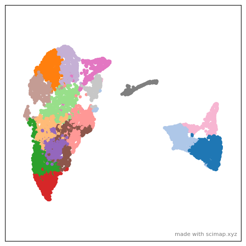
[ ]:
# Open MEL1_part1_animation_umap2xy_scimap.gif to enjoy the animation.
from IPython.display import Image
Image(url='MEL1_part2_animation_umap2xy_scimap.gif')